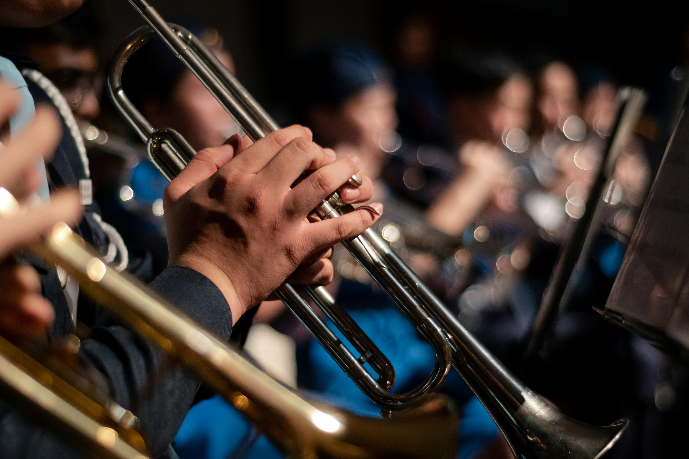
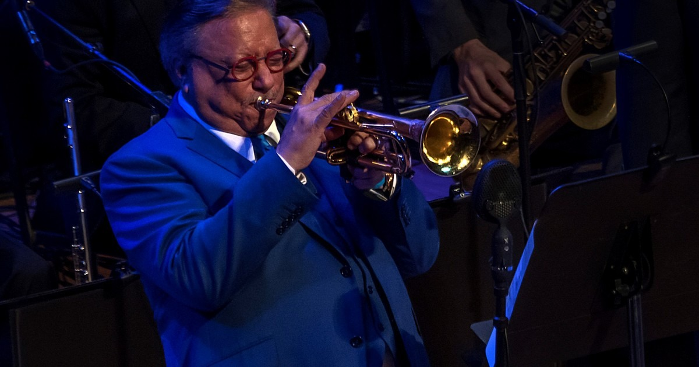
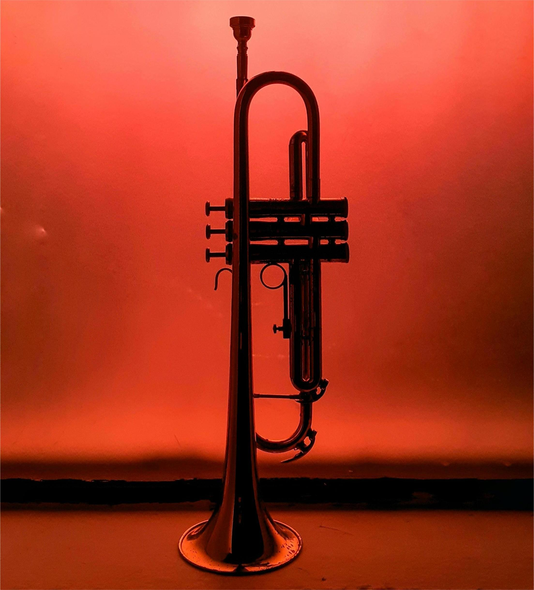
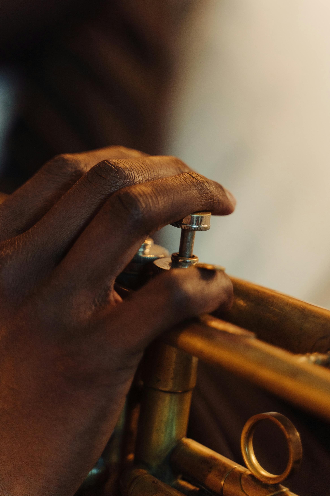

Un instrumento de fuerza y brillantez
Me gusta la trompeta porque es un instrumento que tiene mucha fuerza y un sonido muy brillante. Desde que empecé a tocarla, me di cuenta de que requiere mucho aire y control, y eso me motiva a mejorar cada día.

Normalmente le dedico unas 2 horas al día. Empiezo calentando con notas largas y luego paso a practicar las canciones o escalas que me tocan para la semana.
La trompeta es increíblemente versátil. Se usa en muchos estilos como Jazz, Salsa y música clásica. Esta diversidad hace que nunca me aburra de practicar y siempre tenga nuevos retos por delante.
Dato interesanteLa trompeta puede alcanzar frecuencias que van desde 165 Hz hasta más de 1000 Hz, siendo uno de los instrumentos más brillantes de la orquesta.


